תקציר מנהלים
הפתרון נותן למשרד שליטה על קליטת לקוחות, משימות שוטפות, מכתבי התקשרות, דיווחים ניהוליים ושקיפות בסיסית ללקוח. monday.com משמשת כמערכת העבודה המרכזית, Make מחבר בין monday, Google Docs ו-Gmail, והפורטל החיצוני מציג ללקוח מידע מוגבל ובטוח יחסית לצורך הדגמה.
המימוש אינו מחליף מערכת הנהלת חשבונות. הוא מנהל תהליך תפעולי: מי הלקוח, באיזה שלב התיק, אילו משימות פתוחות, מי אחראי, מה חסר מהלקוח ומה נשלח אליו.
נכלל בהגשה
- סקריפטים ליצירת לוחות monday ונתוני דוגמה.
- לוחות לקוחות, משימות שוטפות וצוות לדוגמה.
- אוטומציות monday פעילות לתהליך העבודה.
- תרחיש Make למכתב התקשרות ותרחיש דיווח שבועי.
- פורטל לקוח בעברית עם קריאה וכתיבה מבוקרת ל-monday.
השלמה ואימות
- דשבורד ניהולי מוקם ב-monday לפי ההגדרה במסמך.
- טופס קליטה מוגדר דרך כלי הטפסים של monday או תור קליטה.
- בדיקת מסלול מלא של מכתב התקשרות ואימייל מול חשבונות חיים.
- עדכון משתני סביבה ב-Vercel לאחר החלפת לוחות.
אופציונלי להמשך
- אימות פורטל באמצעות קישור קסם או התחברות.
- חתימה דיגיטלית על מכתב התקשרות.
- מנוע מלא לכללי מועדים וחזרתיות.
- ייבוא היסטורי מאקסלים קיימים.
תחום המערכת וגבולות
המערכת מתמקדת בניהול עבודה ולא בתוכן החשבונאי עצמו. היא מתאימה להגשה קצרה שבה צריך להראות חשיבה מערכתית, מימוש טכני ויכולת להסביר החלטות.
| בתחום | מחוץ לתחום |
|---|---|
| קליטת ליד, פתיחת תיק לקוח, שיוך רואה חשבון, ניהול סטטוס קליטה וסוגי שירות. | הנהלת חשבונות בפועל, ספר ראשי, חישובי מס, דוחות כספיים ותשלומים. |
| משימות שוטפות לפי לקוח, תקופת דיווח, מועד יעד, אחראי וסטטוס. | מנוע מלא לכל סוגי המועדים הרגולטוריים בכל תרחיש אמיתי. |
| מכתבי התקשרות דרך Google Docs ושליחה דרך Gmail באמצעות Make. | חתימה אלקטרונית, ארכיון מסמכים מלא והרשאות מתקדמות. |
| פורטל לקוח להגשה עם סטטוס, בקשות פתוחות ותגובה מבוקרת. | אימות ייצור מלא, הרשאות לפי תפקיד וחשיפת מסמכים רגישים. |
תהליך קליטת לקוח
- נוצר ליד ידנית או דרך טופס קליטה.
- מנהל או רואה חשבון בודק פרטים בסיסיים ומשייך אחראי.
- נשלח שאלון קליטה והסטטוס מתעדכן ל-שאלון נשלח.
- הלקוח מחזיר שאלון ומסמכים.
- הצוות מסמן מסמכים התקבלו כאשר כל החומר הראשוני הגיע.
- בדיקת המסמכים מנוהלת בשדה נפרד כדי לא למחוק את שלב הקליטה.
- אם חסר מידע, השדה מידע חסר מתעדכן והלקוח רואה בקשה בפורטל.
- כאשר המשרד מקבל את הלקוח, הסטטוס עובר ל-תיק נפתח.
- Make יוצר מכתב התקשרות, שומר קישור ב-monday ושולח אימייל ללקוח.
- לאחר אישור מוכנות, הסטטוס עובר ל-פעיל ונוצרות משימות שוטפות לפי השירותים שנבחרו.
מבנה לוחות monday
לוח לקוחות
כל פריט בלוח מייצג תיק לקוח תפעולי. שם הפריט הראשי הוא שם הלקוח או העסק, כדי לא ליצור כפילות מיותרת.
| שדה | מטרה |
|---|---|
| שם לקוח, ח.פ / תעודת זהות, סוג ישות, איש קשר, אימייל, טלפון | פרטי תיק ותקשורת בסיסיים. |
| רואה חשבון אחראי / איש צוות אחראי לדוגמה | בעלות תפעולית על התיק וחיתוך עומסים בדשבורד. |
| סטטוס קליטה | ליד, שאלון נשלח, מסמכים התקבלו, תיק נפתח, פעיל. |
| סוגי שירות | הנהלת חשבונות, שכר, דיווח חודשי, מע"מ, ניכויים, דוח שנתי וכדומה. |
| מידע חסר, בדיקת מסמכים | ניהול חסמים בלי לשנות את שלב הקליטה הראשי. |
| סטטוס מכתב התקשרות, קישור מכתב התקשרות | נקודות כתיבה של Make אחרי יצירה ושליחה. |
| תגובת לקוח, פירוט תגובת לקוח, עדכון אחרון מהלקוח | כתיבה מבוקרת מהפורטל לצורך בדיקת הצוות. |
לוח משימות שוטפות
כל פריט הוא משימה מתוארכת לתקופת דיווח מסוימת. איחור מחושב לפי תאריך יעד וסטטוס, ולא נשמר כסטטוס עצמאי.
| שדה | מטרה |
|---|---|
| תיק לקוח מקושר | קישור בין העבודה השוטפת לתיק הלקוח. |
| אחראי / איש צוות אחראי לדוגמה | בעלות על המשימה וחישוב עומס. |
| תאריך יעד, תקופת דיווח, סוג שירות | הקשר תפעולי למשימה ולדשבורד. |
| סטטוס משימה | לא התחיל, בטיפול, ממתין ללקוח, בוצע. |
| מידע חסר / בקשה מהלקוח | הסבר ברור למה המשימה ממתינה ומה הלקוח צריך לעשות. |
לוח צוות לדוגמה
בסביבת monday עם משתמש אחד, לוח צוות מאפשר להציג כמה רואי חשבון, תפקידים ועומסים בלי להזמין משתמשים אמיתיים. בסביבת ייצור משתמשים בעמודות אנשים אמיתיות של monday.
אוטומציות
בתוך monday
- כאשר תיק לקוח עובר ל-פעיל, נוצרות משימות שוטפות מקושרות לפי סוגי השירות.
- כאשר משימה מגיעה לתאריך יעד והסטטוס אינו בוצע, נשלחת התראה לאחראי.
- כאשר משימה עוברת ל-ממתין ללקוח, הצוות מקבל אינדיקציה שהלקוח צריך להשלים מידע.
- כאשר מתקבלת תגובת לקוח מהפורטל, רואה החשבון האחראי מקבל התראה לבדיקה.
דרך Make
- תרחיש מכתב התקשרות מרכזי: טריגר מ-monday, שליפת פרטי לקוח מלאים, יצירת מסמך ושליחת אימייל לפי תנאים.
- תרחיש דיווח שבועי: איסוף משימות פתוחות, משימות באיחור, משימות שממתינות ללקוח ועומס לפי רואה חשבון.
- בדיקות בסיסיות מונעות שליחה כאשר חסר אימייל או קישור למסמך.
מכתב התקשרות ודיווח שבועי ב-Make
כדי להתאים למגבלת חשבון ההגשה, יצירת מכתב ההתקשרות ושליחתו מרוכזות בתרחיש Make אחד עם נתב. הפרדה לוגית נשמרת בענפים: ענף יצירה פועל כאשר תיק נפתח והמכתב עדיין לא נוצר או נשלח; ענף שליחה פועל רק כאשר סטטוס המכתב הוא נוצר וקיימים אימייל וקישור תקינים.
הדיווח השבועי נשלח כמייל ניהולי בעברית. הוא אמור לכלול משימות באיחור, משימות לשבוע הקרוב, משימות שממתינות ללקוח, עומס לפי אחראי ותיקי לקוח עם מידע חסר.
פורטל לקוח
הפורטל הוא ממשק חיצוני בעברית, מחובר ל-monday דרך צד שרת בלבד. הדפדפן אינו מקבל אסימון monday. לצורך ההגשה הלקוח מזדהה באמצעות בחירה מרשימה או חיפוש לפי ח.פ / תעודת זהות. בסביבת ייצור יש להחליף זאת באימות חזק יותר, למשל קישור חד-פעמי למייל.
- הצגת סטטוס תיק בשפה ידידותית.
- הצגת משימות ובקשות פתוחות הרלוונטיות ללקוח.
- הסתרת הערות פנימיות, מזהי monday, דשבורדים ועומסי צוות.
- אפשרות לשלוח תגובה מוגבלת שנשמרת בשדות תגובת לקוח.
- אין אישור מסמכים אוטומטי ואין קידום סטטוס פנימי ללא בדיקת צוות.
דשבורד מנהל
הדשבורד מוקם ב-monday ומחובר ללוחות הלקוחות והמשימות. המטרה היא מבט מהיר על עומס וסיכון, לא מסך עבודה מלא.
| תצוגה | הגדרה מומלצת |
|---|---|
| עומס לפי רואה חשבון | תרשים עמודות של משימות פתוחות לפי אחראי או איש צוות לדוגמה. |
| משימות באיחור | טבלה של משימות שתאריך היעד שלהן עבר והסטטוס אינו בוצע. |
| לקוחות לפי סטטוס קליטה | תרשים ספירה לפי ליד, שאלון נשלח, מסמכים התקבלו, תיק נפתח ופעיל. |
טופס קליטה
טופס קליטה הוא תוספת שימושית, אך אינו תנאי לליבת המערכת. הטופס אוסף שם לקוח או עסק, ח.פ / תעודת זהות, סוג ישות, איש קשר, אימייל, טלפון, סוגי שירות מבוקשים, הערות ואישור הסכמה אם נדרש. בהגדרת ההגשה, כלי הטפסים של monday עשוי ליצור לוח תגובות נפרד; במקרה כזה הוא משמש כתור קליטה שממנו מעבירים או ממפים לידים ללוח הלקוחות.
הנחות עבודה ושאלות פתוחות
הנחות לאב הטיפוס
- פריט בלוח הלקוחות הוא תיק לקוח תפעולי.
- מידע חסר אינו מחליף את סטטוס הקליטה.
- מסמכים התקבלו פירושו שהחומר הגיע, לא שהוא אושר מקצועית.
- תיק נפתח מפעיל יצירת מכתב התקשרות.
- פעיל נקבע ידנית אחרי אישור מוכנות.
- משימות שוטפות הן מופעים מתוארכים לפי תקופת דיווח.
שאלות להמשך מול משרד אמיתי
- אילו שדות ומסמכים נדרשים לכל סוג ישות?
- מהם השירותים, כללי החזרתיות והמועדים האמיתיים?
- מי מקבל בעלות על כל סוג עבודה?
- האם הפורטל דורש קישור קסם, התחברות או מנגנון אחר?
- מי מקבל את הדיווח השבועי ובאיזה פורמט?
- האם נדרש ייבוא היסטורי מאקסלים קיימים?
תרשימי זרימה
קליטת לקוח

מכתב התקשרות ב-Make

משימה שוטפת ובקשת לקוח

פורטל לקוח

מסלול הצגה מומלץ
- להציג את לוחות הלקוחות, המשימות והצוות ואת השדות המרכזיים.
- להראות לקוח לדוגמה, למשל אקמי בע"מ, עם סוגי שירות מע"מ ושכר.
- להעביר את הלקוח דרך שאלון נשלח, מידע חסר, מסמכים התקבלו ובדיקת מסמכים.
- להעביר לסטטוס תיק נפתח ולהראות יצירת קישור למכתב התקשרות.
- להראות שליחת מייל מכתב התקשרות ועדכון סטטוס לנשלח.
- להעביר לסטטוס פעיל ולהראות משימות שוטפות מקושרות.
- להציג דשבורד עומסים, איחורים וסטטוסי קליטה.
- לפתוח את הפורטל, לבחור לקוח, לראות בקשות פתוחות ולשלוח תגובת לקוח.
- לחזור ל-monday ולהראות שהתגובה נשמרה ונוצרה התראה לבדיקה.
סיכום
המימוש מדגים פתרון קטן אך שלם: בסיס נתונים תפעולי ב-monday, אוטומציות פנימיות, אינטגרציות Make למסמכים ודוא"ל, פורטל לקוח חיצוני ודשבורד ניהולי. ההחלטות המרכזיות נשמרות פשוטות: סטטוס קליטה לינארי, חסמים בשדות נפרדים, משימות מתוארכות, וכתיבה חיצונית שאינה מקדמת סטטוס בלי בדיקת צוות.